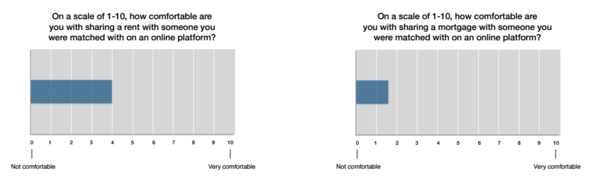
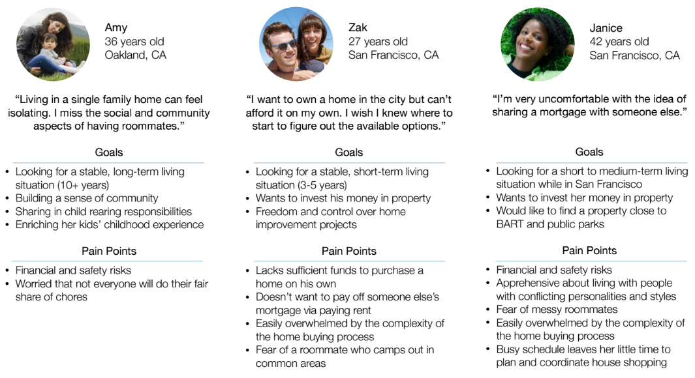
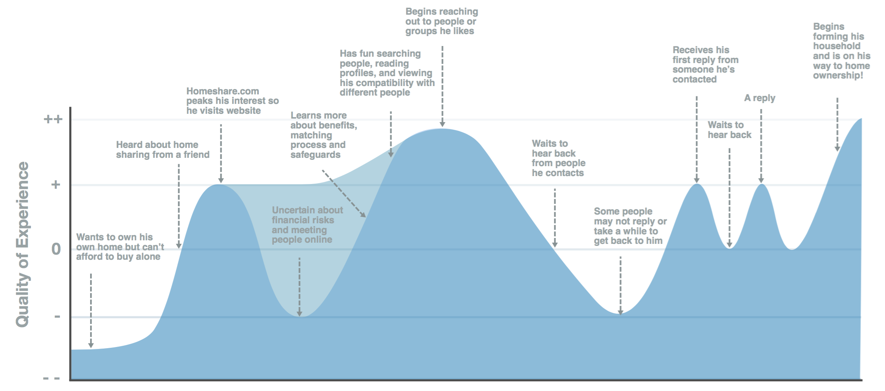

The Problem
Homes.com connects people to all things real estate: listings, agents, tools and information to help them find and buy their next home. But as prices of homes continue to skyrocket - especially in urban areas like San Francisco - Homes.com wants to help people who may not have a path to home ownership find one through combining forces with other compatible people and sharing their otherwise unattainable dream home.
The Process
Fail Fast to Avoid Feature Bloat
The client came to us with no preconceived ideas of whether our design should be integrated into their existing site (Homes.com) or whether it should be a companion site. Our initial designs were based on the idea of integration with Homes.com, but we soon realized that the design would be a much better user experience if separate for two reasons:
- Integration to Homes.com would require adding/changing the UI of virtually every page of the site. We didn’t want to confuse existing users with these changes.
- The choice of whether or not to buy/rent individually versus with other parties is made early on. We didn’t want to overwhelm new users with so many options after they’ve made that decision.
Understanding Perceptions and the High Stakes
After sending out an initial survey, we found that people gravitate toward the financial and social benefits of shared living arrangements but get turned off by the risks of sharing finances with someone they met online. Even though most people have participated in some sort of financial transaction with a stranger online (i.e., eBay, Airbnb, Craigslist), we learned that for most people, asking them to share a mortgage were raising the stakes too high.
Our survey helped us identify who we wanted to target for in-depth interviews. We interviewed people who were currently or had previously been in shared living arrangements to leverage their experience and educate people unfamiliar with home sharing on what the benefits are and how to mitigate risks.
User personas were developed based on common fears of home sharing unearthed during our survey and the goals of individuals who actually sought out a shared living arrangement.
The Solution
Our solution was to design a responsive platform that would address the fears uncovered in our research by building users’ confidence in connecting with people online. We achieve this by offering users a thorough matching process, control over the who, when and how they communicate with potential house mates, and education on best practices for ensuring a smooth and successful shared living arrangement.
Wireframes and Clickable Prototype
Other Deliverables - Journey Map (Zak)
Next Steps
- Develop all pages for both mobile and desktop prototypes
- Conduct usability testing
- Create journey maps for remaining personas to identify areas for improvement
- Produce a high fidelity prototype